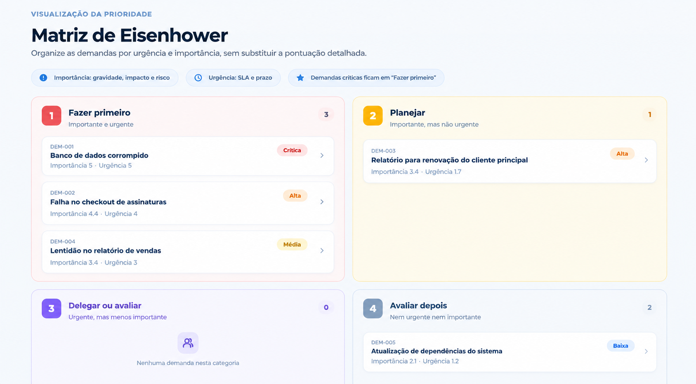
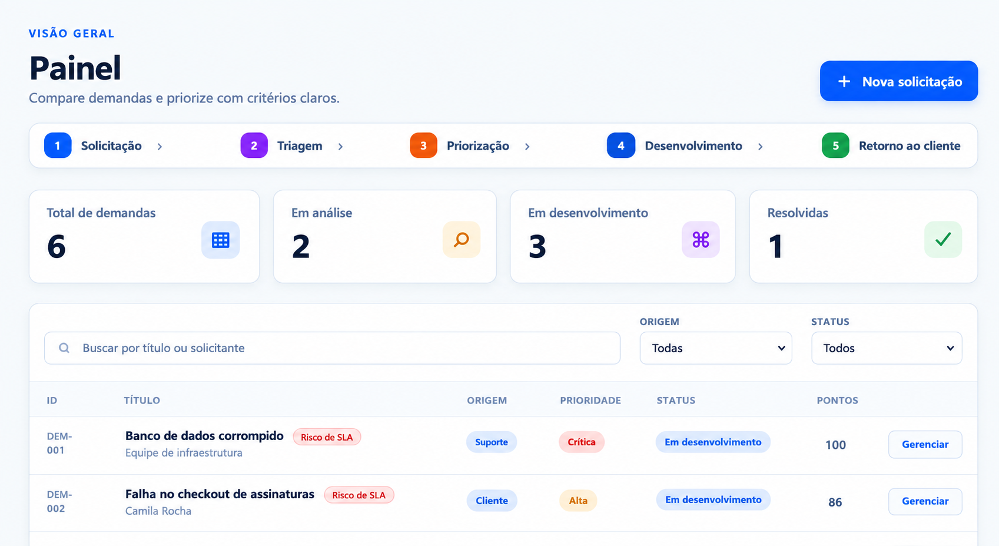

Organize e avalie suas demandas de forma simples e objetiva.
Começar agoraO Prioriza foi validado com base em uma pesquisa, que ajudou a identificar os principais problemas relacionados à priorização de demandas.
respostas coletadas
priorizam demandas
citaram insatisfação do cliente
citaram atrasos
Quando várias solicitações chegam ao mesmo tempo, decidir o que deve ser feito primeiro pode se tornar complicado.
Diferentes solicitações competem pela atenção da equipe ao mesmo tempo.
Cada pessoa pode considerar fatores diferentes para decidir o que é mais importante.
Sem critérios claros, fica mais difícil justificar por que uma demanda deve vir antes de outra.
O Prioriza organiza o processo de análise para ajudar a equipe a tomar decisões mais claras.
A demanda é registrada no sistema.
As informações são analisadas e organizadas.
A demanda é avaliada com base em critérios.
A equipe encaminha as demandas prioritárias.
O cliente recebe informações sobre sua solicitação.
O Prioriza considera diferentes fatores para ajudar a equipe a entender quais demandas devem receber mais atenção.
Qual é o impacto da demanda para o negócio?
Existe um prazo ou necessidade imediata?
Qual o nível do problema causado pela demanda?
Quantas pessoas ou clientes são impactados?
Quais consequências podem acontecer caso nada seja feito?
Quanto trabalho será necessário para solucionar?
A Matriz de Eisenhower organiza as demandas de acordo com sua importância e urgência, facilitando a visualização do que precisa de atenção.
Conhecer a matriz →
Uma plataforma desenvolvida para facilitar a organização, análise e priorização de demandas.
Tenha uma visão centralizada das solicitações, prioridades e informações importantes para a equipe.

Visualize as demandas de acordo com sua importância e urgência para facilitar a tomada de decisão.
O Prioriza transforma informações e critérios em uma visão mais clara para apoiar decisões.
Avalie demandas utilizando diferentes fatores para apoiar a priorização.
Tenha as informações organizadas para entender melhor o cenário das demandas.
O sistema apoia a equipe, mas a decisão final continua sendo das pessoas.
Organize suas demandas, analise os critérios e tome decisões com mais clareza.
Conhecer o Prioriza →